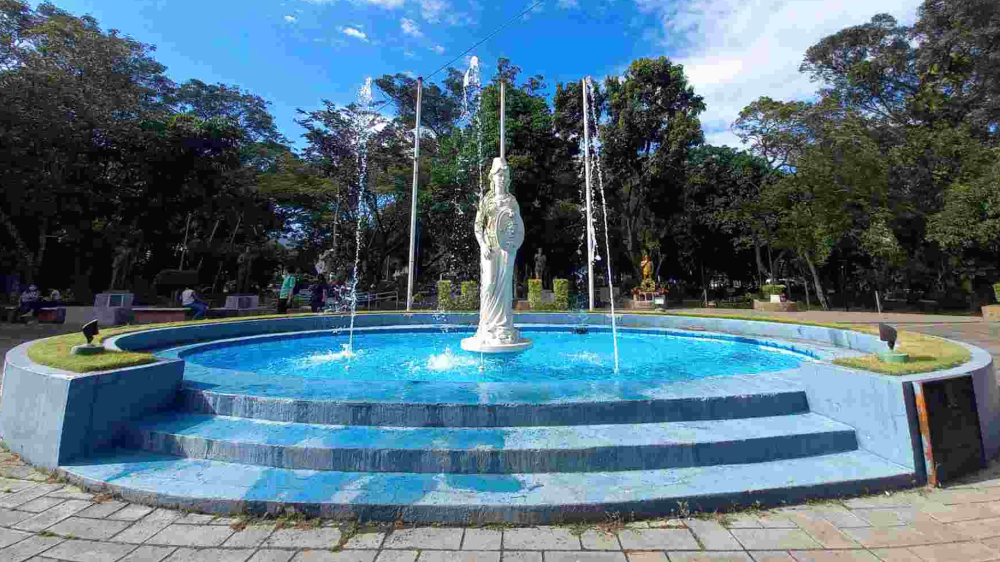

¡Bienvenido a tu facultad!
La Facultad de Ciencias Naturales y Matemáticas es una de las más importantes de la universidad. Aquí se forman profesionales en diferentes áreas del conocimiento.
Ubicada en las principales ciudades del país: San Salvador, Santa Ana, San Miguel y San Vicente. La Universidad de El Salvador es la institución de educación superior que posee los mejores y más grandes espacios educativos y de aprendizaje, enfocados en brindar excelencia académica en todos los campos